1. Problem setting1. 問題設定
An edge unfolding of a polyhedron is a flat polygon obtained by cutting it along some of its edges and flattening the faces onto the plane. An edge unfolding overlaps if the interiors of two of its faces intersect; following a recent update [DO25] to the textbook [DO07], faces that only touch along their boundaries do not count as overlapping.
多面体の辺展開図とは、多面体をいくつかの辺に沿って切り開き、面を平面上に広げて得られる多角形である。辺展開図の 2 つの面の内部が交わるとき、その辺展開図は重なるという。教科書 [DO07] の最近の更新 [DO25] に従い、境界どうしが接するだけの面は重なりとみなさない。
We consider the regular $n$-gonal prism: its two bases are regular $n$-gons with edges of length $1$, and its $n$ side faces are $1 \times h$ rectangles, where $h > 0$ is the height.
ここでは正 $n$ 角柱を考える。2 つの底面は辺の長さ $1$ の正 $n$ 角形であり、$n$ 枚の側面は $1 \times h$ の長方形である。ここで $h > 0$ は高さである。
For $h = 1$, Shiota and Saitoh showed that no edge unfolding overlaps for $3 \le n \le 23$, whereas an overlapping edge unfolding exists for every $n \ge 24$ [SS24]. On the other hand, the sketches of Schlickenrieder show overlapping edge unfoldings of a $12$-gonal prism of height about $15$ (Figure 1(a)) and of a $15$-gonal prism of height about $0.2$ (Figure 1(b)) [Sch97]. Whether a prism has an overlapping edge unfolding thus depends on $h$ as well as on $n$, which leads to the following open problem.
$h = 1$ の場合について、Shiota と Saitoh は、$3 \le n \le 23$ ではどの辺展開図も重ならず、$n \ge 24$ では重なる辺展開図が存在することを示した [SS24]。一方、Schlickenrieder のスケッチには、高さ約 $15$ の正 $12$ 角柱（図 1(a)）と、高さ約 $0.2$ の正 $15$ 角柱（図 1(b)）の重なる辺展開図が描かれている [Sch97]。このように、重なる辺展開図が存在するかどうかは $n$ だけでなく $h$ にも依存する。ここから次の未解決問題が生じる。
Open Problem (CCCG 2023, Open Problem 7). For which $n$ and $h$ does a regular $n$-gonal prism of height $h$ have an overlapping edge unfolding?
未解決問題（CCCG 2023, Open Problem 7）。どのような $n$ と $h$ に対して、高さ $h$ の正 $n$ 角柱は重なる辺展開図を持つか。
(a) Regular $12$-gonal prism(a) 正 $12$ 角柱
(b) Regular $15$-gonal prism(b) 正 $15$ 角柱
2. Main results2. 主結果
The following theorem answers the open problem for every $n$ and $h$.
次の定理は、すべての $n$ と $h$ についてこの未解決問題に答える。
Theorem. Let $\alpha = 2\pi/n$. For a regular $n$-gonal prism whose bases have edges of length $1$ and whose height is $h > 0$, the following hold.
- $3 \le n \le 10$: no edge unfolding overlaps, regardless of $h$.
- $11 \le n \le 25$: there are two thresholds $h_1(n) < h_2(n)$ such that an overlapping edge unfolding exists for $0 < h < h_1(n)$ and for $h > h_2(n)$, whereas no edge unfolding overlaps for $h_1(n) \le h \le h_2(n)$. The two thresholds are given by \[ h_1(n) = \begin{cases} \dfrac{\sin 3\alpha - \sin 2\alpha}{\cos\alpha} & (11 \le n \le 12), \\[2ex] \dfrac{\sin 3\alpha - \sin 2\alpha}{\cos\alpha - \cos 3\alpha} & (13 \le n \le 16), \\[2ex] \dfrac{\cos 4\alpha + 2 - \cos\alpha - \cos 2\alpha}{\sin 3\alpha} & (17 \le n \le 19), \\[2ex] \dfrac{2\sin 5\alpha - \sin 4\alpha - \sin 3\alpha + \sin\alpha}{\cos 2\alpha - \cos 5\alpha} & (20 \le n \le 25), \end{cases} \] \[ h_2(n) = \begin{cases} \dfrac{\cos\alpha}{\sin 3\alpha - \sin 2\alpha} & (n = 11), \\[2ex] \dfrac{\cos\alpha - \cos 3\alpha}{\sin 3\alpha - \sin 2\alpha} & (12 \le n \le 25). \end{cases} \]
- $n \ge 26$: an overlapping edge unfolding exists, regardless of $h$.
定理. $\alpha = 2\pi/n$ とする。底面の辺の長さが $1$、高さが $h > 0$ の正 $n$ 角柱について、次が成り立つ。
- $3 \le n \le 10$ のとき：$h$ によらず、どの辺展開図も重ならない。
- $11 \le n \le 25$ のとき：2 つの閾値 $h_1(n) < h_2(n)$ が存在し、$0 < h < h_1(n)$ および $h > h_2(n)$ では重なる辺展開図が存在する一方、$h_1(n) \le h \le h_2(n)$ ではどの辺展開図も重ならない。2 つの閾値は次で与えられる。 \[ h_1(n) = \begin{cases} \dfrac{\sin 3\alpha - \sin 2\alpha}{\cos\alpha} & (11 \le n \le 12), \\[2ex] \dfrac{\sin 3\alpha - \sin 2\alpha}{\cos\alpha - \cos 3\alpha} & (13 \le n \le 16), \\[2ex] \dfrac{\cos 4\alpha + 2 - \cos\alpha - \cos 2\alpha}{\sin 3\alpha} & (17 \le n \le 19), \\[2ex] \dfrac{2\sin 5\alpha - \sin 4\alpha - \sin 3\alpha + \sin\alpha}{\cos 2\alpha - \cos 5\alpha} & (20 \le n \le 25), \end{cases} \] \[ h_2(n) = \begin{cases} \dfrac{\cos\alpha}{\sin 3\alpha - \sin 2\alpha} & (n = 11), \\[2ex] \dfrac{\cos\alpha - \cos 3\alpha}{\sin 3\alpha - \sin 2\alpha} & (12 \le n \le 25). \end{cases} \]
- $n \ge 26$ のとき：$h$ によらず、重なる辺展開図が存在する。
- an overlapping edge unfolding exists重なる辺展開図が存在する
- no edge unfolding overlapsどの辺展開図も重ならない
Press a point of the plot, or drag it, to see whether the prism there has an overlapping edge unfolding.図の点を押すか、つまんで動かすと、その角柱に重なる辺展開図があるかどうかを示す。
3. Classification of path partial unfoldings3. パス状の部分展開図の分類
Let $Q$ be a polyhedron, and let $G_Q$ be the graph whose vertices are the faces of $Q$ and whose edges join the faces sharing an edge. The edge unfoldings of $Q$ correspond one-to-one with the spanning trees of $G_Q$. For an edge unfolding, the faces along a path in its spanning tree form a path partial unfolding. By rotational unfolding [SS24], $Q$ has an overlapping edge unfolding if and only if the two end faces of some path partial unfolding of $Q$ overlap.
多面体 $Q$ に対し、$Q$ の面を頂点とし、辺を共有する面どうしを辺で結んだグラフを $G_Q$ とする。$Q$ の辺展開図は $G_Q$ の全域木と一対一に対応する。辺展開図に対し、その全域木のパスに沿った面がパス状の部分展開図をなす。回転展開 [SS24] により、$Q$ が重なる辺展開図を持つのは、$Q$ のあるパス状の部分展開図の両端の面が重なるとき、かつそのときに限る。
A regular $n$-gonal prism has only two bases, regardless of $n$. We call a sequence of one or more consecutive side faces a band; a band of $\ell$ side faces unfolds to an $\ell \times h$ rectangle. Writing $\mathsf{B}$ for a base and $\mathsf{S}$ for a band, the faces of a path partial unfolding can be written as a sequence of these two symbols, which we call its pattern.
正 $n$ 角柱の底面は、$n$ によらず 2 枚しかない。連続する 1 枚以上の側面の並びを帯とよぶ。$\ell$ 枚の側面からなる帯は $\ell \times h$ の長方形に展開される。底面を $\mathsf{B}$、帯を $\mathsf{S}$ で表すと、パス状の部分展開図の面はこの 2 つの記号の列として書ける。この列をそのパターンとよぶ。
Theorem (classification). The pattern of a path partial unfolding of a regular $n$-gonal prism is one of $\mathsf{B}$, $\mathsf{BS}$, $\mathsf{BSB}$, $\mathsf{BSBS}$, $\mathsf{S}$, $\mathsf{SBS}$, and $\mathsf{SBSBS}$ (Figure 3).
定理（分類）. 正 $n$ 角柱のパス状の部分展開図のパターンは、$\mathsf{B}$、$\mathsf{BS}$、$\mathsf{BSB}$、$\mathsf{BSBS}$、$\mathsf{S}$、$\mathsf{SBS}$、$\mathsf{SBSBS}$ のいずれかである（図 3）。
Every face adjacent to a base is a side face, and every face after a band is a base. A sequence beginning with $\mathsf{B}$ thus grows as $\mathsf{B}$, $\mathsf{BS}$, $\mathsf{BSB}$, $\mathsf{BSBS}$, and stops there because both bases are used. A sequence beginning with $\mathsf{S}$ grows as $\mathsf{S}$, $\mathsf{SB}$, $\mathsf{SBS}$, $\mathsf{SBSB}$, $\mathsf{SBSBS}$, and stops there for the same reason; $\mathsf{SB}$ and $\mathsf{SBSB}$ are the reverses of $\mathsf{BS}$ and $\mathsf{BSBS}$.
底面に隣接する面は側面であり、帯の次の面は底面である。したがって $\mathsf{B}$ で始まる列は $\mathsf{B}$、$\mathsf{BS}$、$\mathsf{BSB}$、$\mathsf{BSBS}$ と伸び、2 枚の底面を使い切るのでそこで止まる。$\mathsf{S}$ で始まる列は $\mathsf{S}$、$\mathsf{SB}$、$\mathsf{SBS}$、$\mathsf{SBSB}$、$\mathsf{SBSBS}$ と伸び、同じ理由でそこで止まる。ここで $\mathsf{SB}$ と $\mathsf{SBSB}$ は、それぞれ $\mathsf{BS}$ と $\mathsf{BSBS}$ を逆から読んだものである。
$\mathsf{B}$
$\mathsf{BS}$
$\mathsf{BSB}$
$\mathsf{BSBS}$
$\mathsf{S}$
$\mathsf{SBS}$
$\mathsf{SBSBS}$
Among the seven patterns, $\mathsf{BSBS}$ and $\mathsf{SBSBS}$ have instances whose two end faces overlap; the overlapping edge unfoldings of Figure 1 come from pattern $\mathsf{SBSBS}$ (a) and pattern $\mathsf{BSBS}$ (b). The other five never overlap, regardless of $n$ and $h$. This is clear for $\mathsf{B}$, $\mathsf{S}$, and $\mathsf{BS}$, and also for $\mathsf{BSB}$, whose two bases lie on opposite sides of the band. For $\mathsf{SBS}$ it is not obvious, but the following lemma holds.
7 つのパターンのうち、$\mathsf{BSBS}$ と $\mathsf{SBSBS}$ には両端の面が重なるものがある。図 1 の重なる辺展開図は、(a) がパターン $\mathsf{SBSBS}$、(b) がパターン $\mathsf{BSBS}$ によるものである。残りの 5 つは、$n$ と $h$ によらず重ならない。$\mathsf{B}$、$\mathsf{S}$、$\mathsf{BS}$ については明らかであり、$\mathsf{BSB}$ も、2 枚の底面が帯を挟んで反対側にあるので明らかである。$\mathsf{SBS}$ については明らかではないが、次の補題が成り立つ。
Lemma. For every $n \ge 3$ and every $h > 0$, the two end faces of a path partial unfolding of pattern $\mathsf{SBS}$ do not overlap.
補題. すべての $n \ge 3$ とすべての $h > 0$ について、パターン $\mathsf{SBS}$ のパス状の部分展開図の両端の面は重ならない。
The proof is given here. Hence only the patterns $\mathsf{BSBS}$ and $\mathsf{SBSBS}$ need to be examined.
証明はこちらに示す。したがって、調べる必要があるのはパターン $\mathsf{BSBS}$ と $\mathsf{SBSBS}$ だけである。
4. Enumeration4. 列挙
For $3 \le n \le 25$, we enumerate the path partial unfoldings of patterns $\mathsf{BSBS}$ and $\mathsf{SBSBS}$; for $n \ge 26$, we show later that an overlapping edge unfolding exists for every $h$. Such a path partial unfolding is determined by the parameters in Table 1 (see Figure 4). The side faces are labeled $0, 1, \ldots, n - 1$ in order, and by a symmetry of the prism we may assume that $\mathsf{S}_0$ consists of the side faces $0, \ldots, \ell_0 - 1$, where the side face $0$ is adjacent to $\mathsf{B}_1$ [SS24]. The band $\mathsf{S}_i$ then consists of the side faces $p_i, p_i + d_i, \ldots, p_i + (\ell_i - 1) d_i$ (modulo $n$), and every tuple of parameters whose three bands are pairwise disjoint gives a candidate.
$3 \le n \le 25$ について、パターン $\mathsf{BSBS}$ と $\mathsf{SBSBS}$ のパス状の部分展開図を列挙する。$n \ge 26$ では、どの $h$ についても重なる辺展開図が存在することを後で示す。このようなパス状の部分展開図は、表 1 のパラメータで決まる（図 4）。側面に順に $0, 1, \ldots, n - 1$ とラベルを付ける。角柱の対称性により、$\mathsf{S}_0$ は側面 $0, \ldots, \ell_0 - 1$ からなり、側面 $0$ が $\mathsf{B}_1$ に接するとしてよい [SS24]。すると帯 $\mathsf{S}_i$ は側面 $p_i, p_i + d_i, \ldots, p_i + (\ell_i - 1) d_i$（$n$ を法として）からなり、3 つの帯が互いに素になるパラメータの組が、それぞれ 1 つの候補を与える。
| Symbol | Meaning | Remark |
|---|---|---|
| $\mathsf{B}_1$, $\mathsf{B}_2$ | the two bases | |
| $\mathsf{S}_0$ | the band joining $\mathsf{B}_1$ and $\mathsf{B}_2$ | |
| $\ell_0$ | the number of side faces in $\mathsf{S}_0$ | |
| $\mathsf{S}_i$ | the band attached to $\mathsf{B}_i$ | the one other than $\mathsf{S}_0$ |
| $\ell_i$ | the number of side faces in $\mathsf{S}_i$ | $\mathsf{S}_i$ consists of side faces not yet used by the path |
| $p_i$ | the label of the side face of $\mathsf{S}_i$ adjacent to $\mathsf{B}_i$ | |
| $d_i$ | the direction in which $\mathsf{S}_i$ extends | $+1$: toward increasing labels $-1$: toward decreasing labels |
| 記号 | 意味 | 補足 |
|---|---|---|
| $\mathsf{B}_1$, $\mathsf{B}_2$ | 2 つの底面 | |
| $\mathsf{S}_0$ | $\mathsf{B}_1$ と $\mathsf{B}_2$ をつなぐ帯 | |
| $\ell_0$ | $\mathsf{S}_0$ の側面の枚数 | |
| $\mathsf{S}_i$ | $\mathsf{B}_i$ に付く帯 | $\mathsf{S}_0$ でない方 |
| $\ell_i$ | $\mathsf{S}_i$ の側面の枚数 | $\mathsf{S}_i$ はパスがまだ使っていない側面からなる |
| $p_i$ | $\mathsf{S}_i$ の側面のうち $\mathsf{B}_i$ に接するもののラベル | |
| $d_i$ | $\mathsf{S}_i$ の伸びる向き | $+1$：ラベルが増える向き $-1$：ラベルが減る向き |
(a) Pattern $\mathsf{BSBS}$(a) パターン $\mathsf{BSBS}$
(b) Pattern $\mathsf{SBSBS}$(b) パターン $\mathsf{SBSBS}$
| $n$ | $\mathsf{BSBS}$ | $\mathsf{SBSBS}$ | $n$ | $\mathsf{BSBS}$ | $\mathsf{SBSBS}$ |
|---|---|---|---|---|---|
| 3 | 8 | 8 | 15 | 1,120 | 49,504 |
| 4 | 20 | 48 | 16 | 1,360 | 68,544 |
| 5 | 40 | 168 | 17 | 1,632 | 93,024 |
| 6 | 70 | 448 | 18 | 1,938 | 124,032 |
| 7 | 112 | 1,008 | 19 | 2,280 | 162,792 |
| 8 | 168 | 2,016 | 20 | 2,660 | 210,672 |
| 9 | 240 | 3,696 | 21 | 3,080 | 269,192 |
| 10 | 330 | 6,336 | 22 | 3,542 | 340,032 |
| 11 | 440 | 10,296 | 23 | 4,048 | 425,040 |
| 12 | 572 | 16,016 | 24 | 4,600 | 526,240 |
| 13 | 728 | 24,024 | 25 | 5,200 | 645,840 |
| 14 | 910 | 34,944 |
Program for the enumeration列挙のプログラムはこちら
5. Reduction5. 削減
The enumeration yields a large number of candidates, so we reduce them in the following three steps.
列挙で得られる候補は非常に多いので、次の 3 段階で減らす。
- Reduction by inclusion
- Reduction of congruent candidates
- Reduction by axis-aligned bounding boxes (AABBs)
- 包含関係による削減
- 合同なものの削減
- AABB を用いた削減
Each of the reductions is described below.
以下に、それぞれの削減に関する説明を示す。
5.1 Reduction by inclusion5.1 包含関係による削減
The first step removes the candidates in which some band other than $\mathsf{S}_0$ is not maximal. Here, a band is maximal if it cannot be extended without reusing a side face of the path partial unfolding. This step is justified by the following lemma (see Figure 5).
1 段階目では、$\mathsf{S}_0$ 以外の帯に極大でないものがある候補を除く。ここで、帯が極大であるとは、部分展開図の側面を再び使わない限り、それ以上伸ばせないことをいう。この削減は、次の補題による（図 5）。
Lemma. Let $P$ be a path partial unfolding of pattern $\mathsf{BSBS}$ or $\mathsf{SBSBS}$. Then there is a path partial unfolding $P'$ of the same pattern, with the same parameters as $P$ except for the lengths of the bands other than $\mathsf{S}_0$, in which every band other than $\mathsf{S}_0$ is maximal. For every $h > 0$, if the two end faces of $P$ overlap, then so do those of $P'$.
補題. $P$ を、パターン $\mathsf{BSBS}$ または $\mathsf{SBSBS}$ のパス状の部分展開図とする。このとき、$P$ と同じパターンのパス状の部分展開図 $P'$ で、次を満たすものが存在する。$P'$ と $P$ は $\mathsf{S}_0$ 以外の帯の長さだけが異なり、$P'$ では $\mathsf{S}_0$ 以外のすべての帯が極大である。さらに、すべての $h > 0$ について、$P$ の両端の面が重なるならば、$P'$ の両端の面も重なる。
Proof. Extending each band other than $\mathsf{S}_0$ until it cannot be extended gives such a $P'$. The two end faces are $\mathsf{B}_1$ and $\mathsf{S}_2$ for pattern $\mathsf{BSBS}$, and $\mathsf{S}_1$ and $\mathsf{S}_2$ for pattern $\mathsf{SBSBS}$. Extending a band only enlarges its rectangle, so a pair that overlaps in $P$ still overlaps in $P'$. ∎
証明. $\mathsf{S}_0$ 以外の各帯を伸ばせなくなるまで伸ばせば、そのような $P'$ が得られる。両端の面は、パターン $\mathsf{BSBS}$ では $\mathsf{B}_1$ と $\mathsf{S}_2$、パターン $\mathsf{SBSBS}$ では $\mathsf{S}_1$ と $\mathsf{S}_2$ である。帯を伸ばしても、その長方形が大きくなるだけである。したがって、$P$ で重なる組は $P'$ でも重なる。∎
(a) Not maximal(a) 極大でない
(b) Maximal(b) 極大
(c) Maximal(c) 極大
Program for the reduction by inclusion包含関係による削減のプログラムはこちら
5.2 Reduction of congruent candidates5.2 合同なものの削減
The second step removes the candidates that are congruent to another candidate. Exchanging the two bases, or reversing the direction of the labels, carries a candidate to a candidate congruent to it (see Figure 6). A band of length $1$ is also obtained twice, once with $d_i = +1$ and once with $d_i = -1$. We keep only one of the candidates related in this way.
2 段階目では、ほかの候補と合同な候補を除く。2 つの底面を入れ替えたり、側面のラベルの向きを逆にしたりすると、合同な候補に移る（図 6）。また、長さ $1$ の帯は、$d_i = +1$ と $d_i = -1$ の 2 通りで得られる。このように互いに移り合う候補は、1 つだけを残す。
(a) A candidate(a) 候補
(b) The bases exchanged(b) 底面を入れ替えたもの
(c) The labels reversed(c) ラベルの向きを逆にしたもの
(d) Both(d) 両方を行ったもの
Program for the reduction of congruent candidates合同なものの削減のプログラムはこちら
5.3 Reduction by axis-aligned bounding boxes5.3 AABB を用いた削減
The third step removes the candidates for which we can show that the two end faces do not overlap for every $h > 0$. We fix a coordinate system and consider the axis-aligned bounding boxes (AABBs) of the two end faces. If their $x$-ranges are disjoint, or their $y$-ranges are disjoint, the two end faces do not overlap. The AABBs need the coordinates of the vertices, for which the following lemma holds.
3 段階目では、すべての $h > 0$ で両端の面が重ならないと示せる候補を除く。座標系を 1 つ固定し、両端の面の軸平行境界ボックス（AABB）を考える。$x$ の範囲どうし、または $y$ の範囲どうしが交わらなければ、両端の面は重ならない。AABB を求めるには頂点の座標が必要であり、これについて次の補題が成り立つ。
Lemma. Let $P$ be a path partial unfolding of pattern $\mathsf{BSBS}$ or $\mathsf{SBSBS}$. Then every vertex of $P$ has coordinates of the form $a + bh$, where $a$ and $b$ do not depend on $h$, and the direction of every edge of $P$ does not depend on $h$.
補題. $P$ を、パターン $\mathsf{BSBS}$ または $\mathsf{SBSBS}$ のパス状の部分展開図とする。このとき、$P$ のすべての頂点の座標は $a + bh$ の形をしている（$a$ と $b$ は $h$ によらない）。また、$P$ のすべての辺の向きは $h$ によらない。
Proof. Place $\mathsf{B}_1$ with its center at the origin; its vertices do not depend on $h$. Each band is an $\ell \times h$ rectangle whose side faces are laid along the line through the edge of the base it is joined to. So each vertex of a band is a vertex of that base plus a vector that does not depend on $h$, possibly plus $h$ times a unit vector that does not depend on $h$. The base $\mathsf{B}_2$ is joined to $\mathsf{S}_0$ along its opposite side, so its shape and orientation do not depend on $h$, and its vertices are of the form $a + bh$. The same holds for $\mathsf{S}_2$. Every edge is an edge of a base or of a band, so its direction does not depend on $h$. ∎
証明. $\mathsf{B}_1$ を、中心が原点に来るように置く。その頂点は $h$ によらない。各帯は、付く底面の辺を含む直線に沿って側面を並べた $\ell \times h$ の長方形である。そのため、帯の頂点は、底面の頂点に $h$ によらないベクトルを足したものか、それにさらに $h$ によらない単位ベクトルの $h$ 倍を足したものである。$\mathsf{B}_2$ は $\mathsf{S}_0$ の反対側の辺に沿って付くので、形と向きは $h$ によらず、頂点は $a + bh$ の形になる。$\mathsf{S}_2$ も同様である。どの辺も底面の辺か帯の辺なので、その向きは $h$ によらない。∎
Hence $a + bh > a' + b'h$ holds for every $h > 0$ if and only if $a \ge a'$ and $b \ge b'$, with at least one of the two strict. If every vertex of one end face has a larger $x$-coordinate than every vertex of the other, the $x$-ranges are disjoint for every $h > 0$; the same holds for the $y$-ranges. Moreover, trying several coordinate systems instead of one removes more candidates. By the following lemma, the same test can be applied in the $n$ coordinate systems obtained by rotating by multiples of $\alpha/2$ (see Figure 7).
したがって、$a + bh > a' + b'h$ がすべての $h > 0$ で成り立つのは、$a \ge a'$ かつ $b \ge b'$ で、少なくとも一方が等号でないときに限る。一方の端の面のすべての頂点の $x$ 座標が、もう一方の端の面のすべての頂点の $x$ 座標より大きければ、すべての $h > 0$ で $x$ の範囲は交わらない。$y$ についても同様である。さらに、座標系を 1 つに限らず、いくつか試すと、より多くの候補を除ける。次の補題により、座標系を $\alpha/2$ ずつ回した $n$ 通りで同じ判定を行える（図 7）。
Lemma. In a coordinate system obtained by a rotation that does not depend on $h$, every vertex of $P$ again has coordinates of the form $a + bh$.
補題. $h$ によらない回転で得られる座標系でも、$P$ のすべての頂点の座標は $a + bh$ の形をしている。
Proof. Such a rotation is a linear map with constant entries, so it takes a vector of the form $a + bh$ to another of this form. ∎
証明. そのような回転は、成分が定数の線形写像なので、$a + bh$ の形のベクトルを同じ形のベクトルに移す。∎
Program for the reduction by axis-aligned bounding boxesAABB を用いた削減のプログラムはこちら
The results of reducing the candidates by the three steps above are shown in Table 3.
以上の 3 段階で候補を削減した結果を、表 3 に示す。
The number of candidates after each step各段階の後に残る候補の数
Table 3. The number of candidates that remain after each step of the reduction.表 3. 各段階の後に残る候補の数。
| $n$ | $\mathsf{BSBS}$ | $\mathsf{SBSBS}$ | ||||||
|---|---|---|---|---|---|---|---|---|
| enumerated列挙 | step 1段階 1 | step 2段階 2 | step 3段階 3 | enumerated列挙 | step 1段階 1 | step 2段階 2 | step 3段階 3 | |
| 3 | 8 | 6 | 3 | 0 | 8 | 8 | 1 | 0 |
| 4 | 20 | 12 | 8 | 0 | 48 | 24 | 4 | 0 |
| 5 | 40 | 20 | 15 | 0 | 168 | 56 | 12 | 0 |
| 6 | 70 | 30 | 24 | 0 | 448 | 114 | 28 | 0 |
| 7 | 112 | 42 | 35 | 0 | 1,008 | 210 | 61 | 0 |
| 8 | 168 | 56 | 48 | 0 | 2,016 | 358 | 114 | 0 |
| 9 | 240 | 72 | 63 | 0 | 3,696 | 574 | 196 | 0 |
| 10 | 330 | 90 | 80 | 0 | 6,336 | 876 | 315 | 0 |
| 11 | 440 | 110 | 99 | 1 | 10,296 | 1,284 | 481 | 1 |
| 12 | 572 | 132 | 120 | 1 | 16,016 | 1,820 | 688 | 1 |
| 13 | 728 | 156 | 143 | 1 | 24,024 | 2,508 | 996 | 2 |
| 14 | 910 | 182 | 168 | 2 | 34,944 | 3,374 | 1,368 | 2 |
| 15 | 1,120 | 210 | 195 | 2 | 49,504 | 4,446 | 1,837 | 5 |
| 16 | 1,360 | 240 | 224 | 2 | 68,544 | 5,754 | 2,414 | 5 |
| 17 | 1,632 | 272 | 255 | 2 | 93,024 | 7,330 | 3,116 | 9 |
| 18 | 1,938 | 306 | 288 | 3 | 124,032 | 9,208 | 3,933 | 8 |
| 19 | 2,280 | 342 | 323 | 3 | 162,792 | 11,424 | 4,961 | 18 |
| 20 | 2,660 | 380 | 360 | 3 | 210,672 | 14,016 | 6,140 | 18 |
| 21 | 3,080 | 420 | 399 | 5 | 269,192 | 17,024 | 7,516 | 27 |
| 22 | 3,542 | 462 | 440 | 6 | 340,032 | 20,490 | 9,109 | 27 |
| 23 | 4,048 | 506 | 483 | 8 | 425,040 | 24,458 | 10,941 | 47 |
| 24 | 4,600 | 552 | 528 | 8 | 526,240 | 28,974 | 12,997 | 45 |
| 25 | 5,200 | 600 | 575 | 8 | 645,840 | 34,086 | 15,412 | 68 |
6. Grouping6. グループ化
The remaining candidates are obtained separately for each $n$. However, two candidates for different $n$ can have the same $\ell_0$, and can have $\mathsf{S}_1$ and $\mathsf{S}_2$ attached in the same directions at the same positions relative to $\mathsf{S}_0$. We therefore group such candidates into families, so that each family can be examined for every $n$ at once.
残った候補は、$n$ ごとに別々に得られる。しかし、$n$ の異なる 2 つの候補が、同じ $\ell_0$ を持ち、$\mathsf{S}_1$ と $\mathsf{S}_2$ を $\mathsf{S}_0$ から見て同じ位置に同じ向きで付けていることがある。そこで、そのような候補を族にまとめ、各族をすべての $n$ について一度に調べられるようにする。
Definition. A family is a set of candidates, one for each $n$ in some range, in which each of $\ell_0$, $p_1$, $d_1$, $\ell_1$, $p_2$, $d_2$, and $\ell_2$ is either a constant or $n$ minus a constant.
定義. 族とは、ある範囲の各 $n$ について候補を 1 つずつ集めたもので、$\ell_0, p_1, d_1, \ell_1, p_2, d_2, \ell_2$ のそれぞれが、定数か、$n$ から定数を引いたものであるものをいう。
$\ell_0 = 2$, $p_2 = n - 3 =$ , $d_2 = +1$, $\ell_2 = 3$$\ell_0 = 2$、$p_2 = n - 3 =$ 、$d_2 = +1$、$\ell_2 = 3$
For $3 \le n \le 25$, the candidates form $8$ families of pattern $\mathsf{BSBS}$ and $68$ families of pattern $\mathsf{SBSBS}$. They are listed in Tables 4 and 5.
$3 \le n \le 25$ では、候補はパターン $\mathsf{BSBS}$ の 8 族と、パターン $\mathsf{SBSBS}$ の 68 族にまとまる。一覧を表 4 と表 5 に示す。
The 8 families of pattern $\mathsf{BSBS}$パターン $\mathsf{BSBS}$ の 8 族の一覧
Table 4. The families of pattern $\mathsf{BSBS}$. Each family is drawn for $n = 25$ and $h = 0.9$.表 4. パターン $\mathsf{BSBS}$ の族。図は $n = 25$、$h = 0.9$ で描いたもの。
| No. | $\ell_0$ | $p_1$ | $d_1$ | $\ell_1$ | $p_2$ | $d_2$ | $\ell_2$ | range of $n$$n$ の範囲 | |
|---|---|---|---|---|---|---|---|---|---|
| 1 | 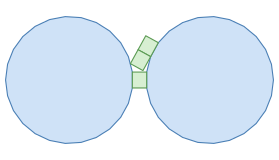 | 1 | — | — | — | 2 | −1 | 2 | $11 \le n \le 25$ |
| 2 | 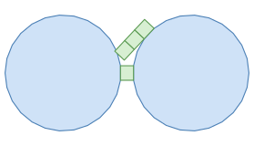 | 1 | — | — | — | 3 | −1 | 3 | $14 \le n \le 25$ |
| 3 | 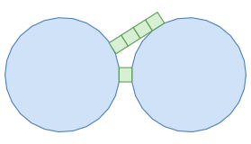 | 1 | — | — | — | 4 | −1 | 4 | $18 \le n \le 25$ |
| 4 | 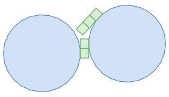 | 2 | — | — | — | 4 | −1 | 3 | $21 \le n \le 25$ |
| 5 | 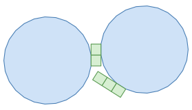 | 2 | — | — | — | $n - 3$ | +1 | 3 | $21 \le n \le 25$ |
| 6 | 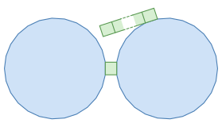 | 1 | — | — | — | 5 | −1 | 5 | $22 \le n \le 25$ |
| 7 | 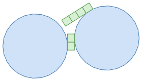 | 2 | — | — | — | 5 | −1 | 4 | $23 \le n \le 25$ |
| 8 | 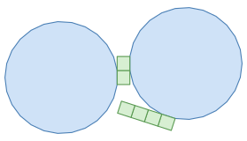 | 2 | — | — | — | $n - 4$ | +1 | 4 | $23 \le n \le 25$ |
The 68 families of pattern $\mathsf{SBSBS}$パターン $\mathsf{SBSBS}$ の 68 族の一覧
Table 5. The families of pattern $\mathsf{SBSBS}$. Each family is drawn for $n = 25$ and $h = 0.9$.表 5. パターン $\mathsf{SBSBS}$ の族。図は $n = 25$、$h = 0.9$ で描いたもの。
| No. | $\ell_0$ | $p_1$ | $d_1$ | $\ell_1$ | $p_2$ | $d_2$ | $\ell_2$ | range of $n$$n$ の範囲 | |
|---|---|---|---|---|---|---|---|---|---|
| 1 | 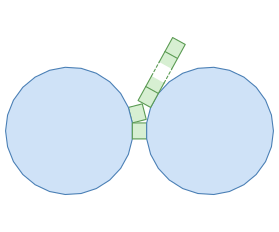 | 1 | 1 | +1 | 1 | 2 | +1 | $n - 2$ | $11 \le n \le 25$ |
| 2 | 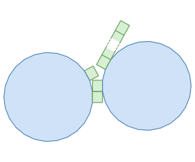 | 2 | 2 | +1 | 1 | 3 | +1 | $n - 3$ | $13 \le n \le 25$ |
| 3 | 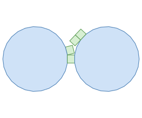 | 1 | 1 | +1 | 1 | 3 | −1 | 2 | $15 \le n \le 25$ |
| 4 | 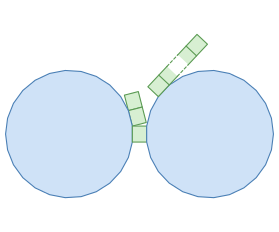 | 1 | 1 | +1 | 2 | 3 | +1 | $n - 3$ | $15 \le n \le 25$ |
| 5 | 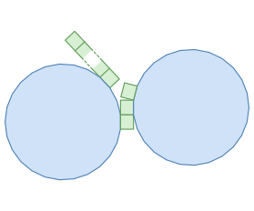 | 2 | 3 | +1 | $n - 3$ | 2 | +1 | 1 | $15 \le n \le 25$ |
| 6 | 1 | 2 | −1 | 2 | 3 | +1 | $n - 3$ | $17 \le n \le 25$ | |
| 7 | 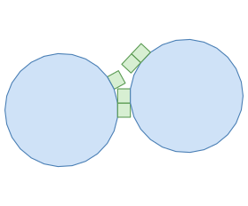 | 2 | 2 | +1 | 1 | 4 | −1 | 2 | $17 \le n \le 25$ |
| 8 | 2 | 2 | +1 | 2 | 4 | +1 | $n - 4$ | $17 \le n \le 25$ | |
| 9 | 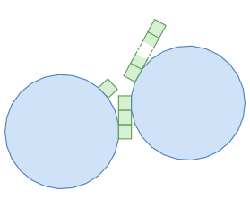 | 3 | 3 | +1 | 1 | 4 | +1 | $n - 4$ | $17 \le n \le 25$ |
| 10 | 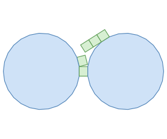 | 1 | 1 | +1 | 1 | 4 | −1 | 3 | $19 \le n \le 25$ |
| 11 | 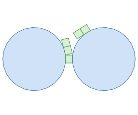 | 1 | 1 | +1 | 2 | 4 | −1 | 2 | $19 \le n \le 25$ |
| 12 | 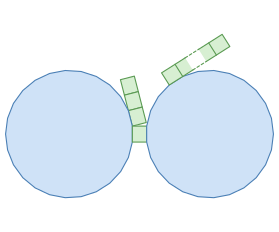 | 1 | 1 | +1 | 3 | 4 | +1 | $n - 4$ | $19 \le n \le 25$ |
| 13 | 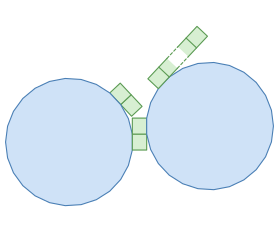 | 2 | 3 | −1 | 2 | 4 | +1 | $n - 4$ | $19 \le n \le 25$ |
| 14 | 2 | 4 | +1 | $n - 4$ | 2 | +1 | 2 | $19 \le n \le 25$ | |
| 15 | 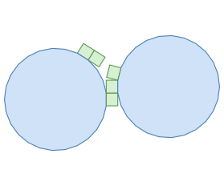 | 2 | 4 | −1 | 2 | 2 | +1 | 1 | $19 \le n \le 25$ |
| 16 | 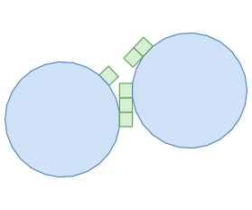 | 3 | 3 | +1 | 1 | 5 | −1 | 2 | $19 \le n \le 25$ |
| 17 | 3 | 3 | +1 | 2 | 5 | +1 | $n - 5$ | $19 \le n \le 25$ | |
| 18 | 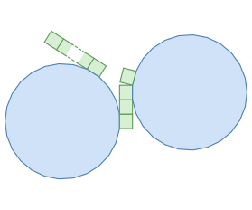 | 3 | 4 | +1 | $n - 4$ | 3 | +1 | 1 | $19 \le n \le 25$ |
| 19 | 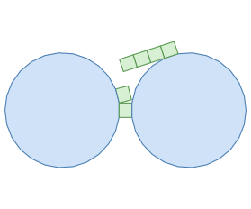 | 1 | 1 | +1 | 1 | 5 | −1 | 4 | $21 \le n \le 25$ |
| 20 | 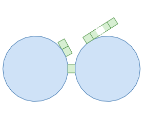 | 1 | 2 | +1 | 2 | 4 | +1 | $n - 4$ | $21 \le n \le 25$ |
| 21 | 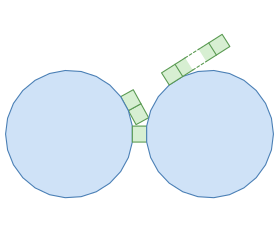 | 1 | 2 | −1 | 2 | 4 | +1 | $n - 4$ | $21 \le n \le 25$ |
| 22 | 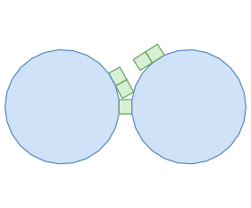 | 1 | 2 | −1 | 2 | 4 | −1 | 2 | $21 \le n \le 25$ |
| 23 | 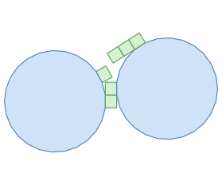 | 2 | 2 | +1 | 1 | 5 | −1 | 3 | $21 \le n \le 25$ |
| 24 | 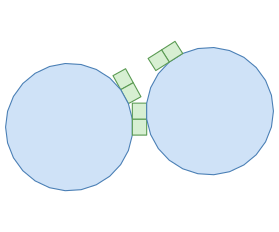 | 2 | 2 | +1 | 2 | 5 | −1 | 2 | $21 \le n \le 25$ |
| 25 | 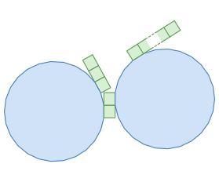 | 2 | 2 | +1 | 3 | 5 | +1 | $n - 5$ | $21 \le n \le 25$ |
| 26 | 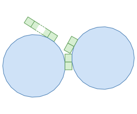 | 2 | 4 | +1 | $n - 4$ | 3 | −1 | 2 | $21 \le n \le 25$ |
| 27 | 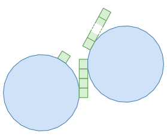 | 4 | 4 | +1 | 1 | 5 | +1 | $n - 5$ | $21 \le n \le 25$ |
| 28 | 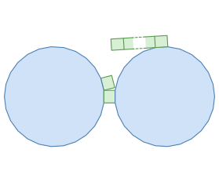 | 1 | 1 | +1 | 1 | 6 | −1 | 5 | $23 \le n \le 25$ |
| 29 | 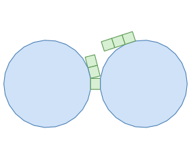 | 1 | 1 | +1 | 2 | 5 | −1 | 3 | $23 \le n \le 25$ |
| 30 | 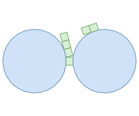 | 1 | 1 | +1 | 3 | 5 | −1 | 2 | $23 \le n \le 25$ |
| 31 | 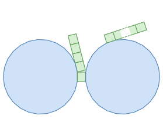 | 1 | 1 | +1 | 4 | 5 | +1 | $n - 5$ | $23 \le n \le 25$ |
| 32 | 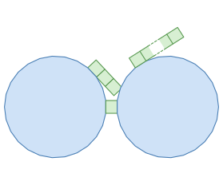 | 1 | 3 | −1 | 3 | 4 | +1 | $n - 4$ | $23 \le n \le 25$ |
| 33 | 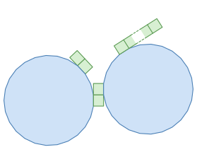 | 2 | 3 | +1 | 2 | 5 | +1 | $n - 5$ | $23 \le n \le 25$ |
| 34 | 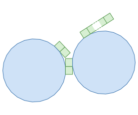 | 2 | 3 | −1 | 2 | 5 | +1 | $n - 5$ | $23 \le n \le 25$ |
| 35 | 2 | 3 | −1 | 2 | 5 | −1 | 2 | $23 \le n \le 25$ | |
| 36 | 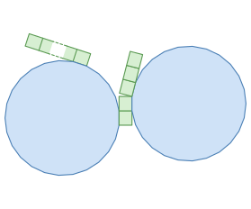 | 2 | 5 | +1 | $n - 5$ | 2 | +1 | 3 | $23 \le n \le 25$ |
| 37 | 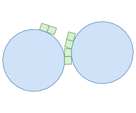 | 2 | 5 | −1 | 2 | 2 | +1 | 2 | $23 \le n \le 25$ |
| 38 | 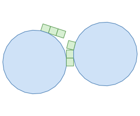 | 2 | 5 | −1 | 3 | 2 | +1 | 1 | $23 \le n \le 25$ |
| 39 | 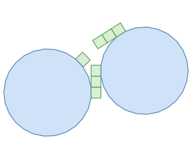 | 3 | 3 | +1 | 1 | 6 | −1 | 3 | $23 \le n \le 25$ |
| 40 | 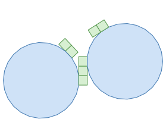 | 3 | 3 | +1 | 2 | 6 | −1 | 2 | $23 \le n \le 25$ |
| 41 | 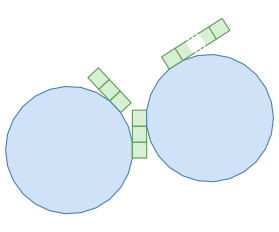 | 3 | 3 | +1 | 3 | 6 | +1 | $n - 6$ | $23 \le n \le 25$ |
| 42 | 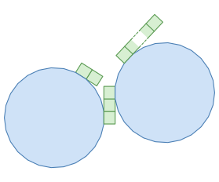 | 3 | 4 | −1 | 2 | 5 | +1 | $n - 5$ | $23 \le n \le 25$ |
| 43 | 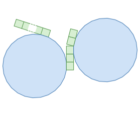 | 3 | 5 | +1 | $n - 5$ | 3 | +1 | 2 | $23 \le n \le 25$ |
| 44 | 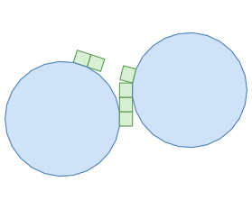 | 3 | 5 | −1 | 2 | 3 | +1 | 1 | $23 \le n \le 25$ |
| 45 | 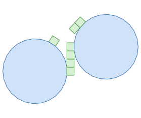 | 4 | 4 | +1 | 1 | 6 | −1 | 2 | $23 \le n \le 25$ |
| 46 | 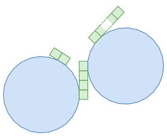 | 4 | 4 | +1 | 2 | 6 | +1 | $n - 6$ | $23 \le n \le 25$ |
| 47 | 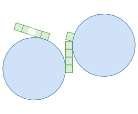 | 4 | 5 | +1 | $n - 5$ | 4 | +1 | 1 | $23 \le n \le 25$ |
| 48 | 1 | 1 | +1 | 1 | 7 | −1 | 6 | $25 \le n \le 25$ | |
| 49 | 1 | 2 | +1 | 2 | 5 | −1 | 2 | $25 \le n \le 25$ | |
| 50 | 1 | 2 | +1 | 3 | 5 | +1 | $n - 5$ | $25 \le n \le 25$ | |
| 51 | 1 | 2 | −1 | 2 | 5 | +1 | $n - 5$ | $25 \le n \le 25$ | |
| 52 | 1 | 2 | −1 | 2 | 5 | −1 | 3 | $25 \le n \le 25$ | |
| 53 | 2 | 2 | +1 | 1 | 6 | −1 | 4 | $25 \le n \le 25$ | |
| 54 | 2 | 2 | +1 | 2 | 6 | −1 | 3 | $25 \le n \le 25$ | |
| 55 | 2 | 2 | +1 | 3 | 6 | −1 | 2 | $25 \le n \le 25$ | |
| 56 | 2 | 2 | +1 | 4 | 6 | +1 | $n - 6$ | $25 \le n \le 25$ | |
| 57 | 2 | 4 | −1 | 3 | 5 | +1 | $n - 5$ | $25 \le n \le 25$ | |
| 58 | 2 | 5 | +1 | $n - 5$ | 3 | +1 | 2 | $25 \le n \le 25$ | |
| 59 | 2 | 5 | +1 | $n - 5$ | 3 | −1 | 2 | $25 \le n \le 25$ | |
| 60 | 2 | 5 | −1 | 2 | 3 | −1 | 2 | $25 \le n \le 25$ | |
| 61 | 3 | 4 | +1 | 2 | 6 | +1 | $n - 6$ | $25 \le n \le 25$ | |
| 62 | 3 | 4 | −1 | 2 | 6 | +1 | $n - 6$ | $25 \le n \le 25$ | |
| 63 | 3 | 4 | −1 | 2 | 6 | −1 | 2 | $25 \le n \le 25$ | |
| 64 | 3 | 5 | +1 | $n - 5$ | 4 | −1 | 2 | $25 \le n \le 25$ | |
| 65 | 4 | 4 | +1 | 1 | 7 | −1 | 3 | $25 \le n \le 25$ | |
| 66 | 4 | 4 | +1 | 2 | 7 | −1 | 2 | $25 \le n \le 25$ | |
| 67 | 4 | 4 | +1 | 3 | 7 | +1 | $n - 7$ | $25 \le n \le 25$ | |
| 68 | 5 | 5 | +1 | 1 | 6 | +1 | $n - 6$ | $25 \le n \le 25$ |
7. Overlap conditions of the three families7. 3 つの族の重なりの条件
Only the following three families need to be analyzed exactly (Figure 9). Every other family overlaps only at heights at which one of these three overlaps, as shown in Section 8.
厳密に解析する必要があるのは、次の 3 つの族だけである（図 9）。ほかの族は、この 3 つのどれかが重なる高さでしか重ならない。これは 8 節で示す。
(a) $\mathsf{BSBS}$-1
(b) $\mathsf{BSBS}$-2
(c) $\mathsf{SBSBS}$-1
The analysis gives the heights at which the two end faces overlap, where $\alpha = 2\pi/n$.
解析の結果、両端の面が重なる高さは次のとおりである（$\alpha = 2\pi/n$）。
- $\mathsf{BSBS}$-1: \[ 0 < h < \begin{cases} \dfrac{\sin 3\alpha - \sin 2\alpha}{\cos\alpha} & (n = 11, 12), \\[2ex] \dfrac{\sin 3\alpha - \sin 2\alpha}{\cos\alpha - \cos 3\alpha} & (13 \le n \le 25). \end{cases} \]
- $\mathsf{BSBS}$-2: \[ 0 < h < \begin{cases} \dfrac{2\sin 5\alpha - \sin 4\alpha - \sin 3\alpha + \sin\alpha}{\cos 2\alpha} & (n = 14, 15), \\[2ex] \dfrac{\cos 4\alpha + 2 - \cos\alpha - \cos 2\alpha}{\sin 3\alpha} & (16 \le n \le 19), \\[2ex] \dfrac{2\sin 5\alpha - \sin 4\alpha - \sin 3\alpha + \sin\alpha}{\cos 2\alpha - \cos 5\alpha} & (20 \le n \le 25). \end{cases} \]
- $\mathsf{SBSBS}$-1: \[ h > \begin{cases} \dfrac{\cos\alpha}{\sin 3\alpha - \sin 2\alpha} & (n = 11), \\[2ex] \dfrac{\cos\alpha - \cos 3\alpha}{\sin 3\alpha - \sin 2\alpha} & (12 \le n \le 25). \end{cases} \]
8. Overlap in the remaining 73 families8. 残りの 73 族における重なり
For the other 73 families, we do not determine the heights at which the two end faces overlap. We only show that they do not overlap for $h_1(n) \le h \le h_2(n)$, where $h_1(n)$ and $h_2(n)$ are the thresholds of Section 2: $h_1(n)$ is the largest of the upper bounds of $\mathsf{BSBS}$-1 and $\mathsf{BSBS}$-2 that apply to $n$, and $h_2(n)$ is the lower bound of $\mathsf{SBSBS}$-1.
ほかの 73 族については、両端の面が重なる高さは求めず、$h_1(n) \le h \le h_2(n)$ で重ならないことだけを示す。$h_1(n)$ と $h_2(n)$ は 2 節の閾値で、$h_1(n)$ は、その $n$ に当てはまる $\mathsf{BSBS}$-1 と $\mathsf{BSBS}$-2 の上限のうち最大のもの、$h_2(n)$ は $\mathsf{SBSBS}$-1 の下限である。
Lemma. Let $11 \le n \le 25$, and let $P$ be a path partial unfolding of pattern $\mathsf{BSBS}$ or $\mathsf{SBSBS}$. Take an edge $e$ of one of the two end faces of $P$, and let $H$ be the closed half-plane bounded by the line through $e$ that contains this end face. If no vertex of the other end face lies in $H$, both when $h = h_1(n)$ and when $h = h_2(n)$, then the two end faces of $P$ do not overlap for any $h$ with $h_1(n) \le h \le h_2(n)$.
補題. $11 \le n \le 25$ とし、$P$ をパターン $\mathsf{BSBS}$ または $\mathsf{SBSBS}$ のパス状の部分展開図とする。$P$ の一方の端の面の辺 $e$ をとり、$e$ を通る直線を境界とする閉半平面のうち、この端の面を含むほうを $H$ とする。$h = h_1(n)$ のときと $h = h_2(n)$ のときのどちらでも、もう一方の端の面の頂点が $H$ に入らなければ、$h_1(n) \le h \le h_2(n)$ のすべての $h$ で、$P$ の両端の面は重ならない。
Proof. By the lemmas of Section 5.3, the direction of $e$ does not depend on $h$. Rotate the coordinate system so that $e$ is horizontal and the end face containing $e$ lies in $H = \{y \le y_0\}$. This rotation does not depend on $h$, so every vertex still has coordinates of the form $a + bh$. The end face containing $e$ is a regular $n$-gon or a rectangle with $e$ as a side, so it lies in $H$ for every $h$. For a vertex $v$ of the other end face, let $f_v(h)$ be the $y$-coordinate of $v$ minus $y_0$. It is again of the form $a + bh$, and hence monotone in $h$. Since $f_v(h_1(n)) > 0$ and $f_v(h_2(n)) > 0$, we have $f_v(h) > 0$ for every $h$ with $h_1(n) \le h \le h_2(n)$. So every vertex of the other end face lies outside $H$, and since the outside of $H$ is convex, so does the whole end face. ∎
証明. 5.3 節の補題により、$e$ の向きは $h$ によらない。$e$ が水平になり、$e$ を含む端の面が $H = \{y \le y_0\}$ に入るように、座標系を回す。この回転は $h$ によらないので、どの頂点の座標も $a + bh$ の形のままである。$e$ を含む端の面は、正 $n$ 角形か、$e$ を 1 辺とする長方形なので、どの $h$ でも $H$ に入っている。もう一方の端の面の頂点 $v$ について、$v$ の $y$ 座標から $y_0$ を引いたものを $f_v(h)$ とする。これも $a + bh$ の形なので、$h$ について単調である。$f_v(h_1(n)) > 0$ かつ $f_v(h_2(n)) > 0$ なので、$h_1(n) \le h \le h_2(n)$ のすべての $h$ で $f_v(h) > 0$ となる。よって、もう一方の端の面の頂点はすべて $H$ の外にあり、$H$ の外は凸なので、この端の面全体も $H$ の外にある。∎
Proofs for the 73 families73 族それぞれの証明はこちら
9. Prisms with $n \ge 26$9. $n \ge 26$ の角柱
Lemma. Let $n \ge 26$. The two end faces of the family $\mathsf{BSBS}$-2 overlap for every $h$ with $0 < h \le 1.15$, and the two end faces of the family $\mathsf{SBSBS}$-1 overlap for every $h \ge 1.15$. Hence, for every $h > 0$, the two end faces of one of the two families overlap.
補題. $n \ge 26$ とする。族 $\mathsf{BSBS}$-2 の両端の面は $0 < h \le 1.15$ のすべての $h$ で重なり、族 $\mathsf{SBSBS}$-1 の両端の面は $h \ge 1.15$ のすべての $h$ で重なる。したがって、どの $h > 0$ でも、2 つの族のどちらかで両端の面が重なる。
(a) $\mathsf{BSBS}$-2
(b) $\mathsf{SBSBS}$-1
10. Summary10. まとめ
Together, the above give the theorem of Section 2.
以上により、2 節の定理が得られる。
- $3 \le n \le 10$: no candidate remains after the third step of the reduction (Table 3). Hence no edge unfolding overlaps, regardless of $h$.
- $11 \le n \le 25$: for $0 < h < h_1(n)$ and for $h > h_2(n)$, one of the three families of Section 7 overlaps. For $h_1(n) \le h \le h_2(n)$, no family overlaps, by Sections 7 and 8.
- $n \ge 26$: by the lemma of Section 9, $\mathsf{BSBS}$-2 or $\mathsf{SBSBS}$-1 overlaps for every $h > 0$.